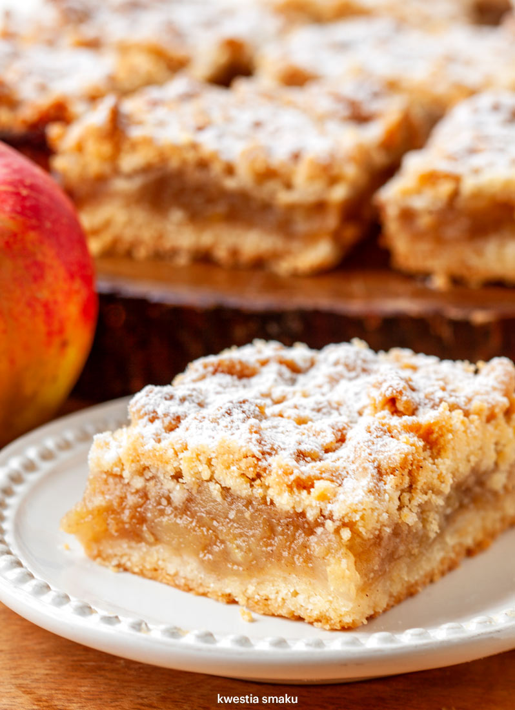

Jabłko to najpopularniejszy owoc zwłaszcza w Polsce, gdzie mają wręcz idealne warunki do wzrostu. Owoce te są cenione za smak i dużą różnorodność. Z jabłek można przygotować wiele bardzo zróżnicowanych potraw, w tym dań na słodko, słono i różnych przetworów. Jabłka mają również wiele cennych dla zdrowia właściwości, dlatego warto je jeść każdego dnia.
Składniki odżywcze:
1. Witaminy C, E, K.
2. Witamin z grupy B (kwas foliowy, tiamina, niacyna, ryboflawina).
3. Beta-karoten (prowitamina wit. A).
Zastosowania jabłek:
1. na surowo najlepiej jeść odmiany twarde, soczyste, słodkie - nazywane deserowymi (lobo, delikates, spartan, jonagold, koksa pomarańczowa, ligol, rubin, gala, golden delicious, idared, mekintosz).
2. do pieczenia, gotowania i na przetwory najlepiej nadają się jabłka kwaśne (antonówka, reneta), gdyż szybko się rozgotowują. Można też dodawać je do potraw, które wymagają zakwaszenia. Zastąpią ocet np. w barszczu czy kapuśniaku, podniosą smak jarzyny z buraków.
3. największe zastosowanie mają jabłka o pośrednich właściwościach, tzw. stołowe (beforest, landsberska, linda, red wealthy, bankroft, boiken, cortland, jonathan).
Szarlotka tradycyjna

Przepis pochodzi ze strony internetowej
Pyszna i prosta do zrobienia szarlotka na kruchym cieście. Każdemu się udaje i wszystkim smakuje! Dla ekstra kruchości część masła można zastąpić smalcem.
Składniki
Porcja dla 12 osób
1,5 kg jabłek (na szarlotkę najlepiej twardych i kwaśnych, np. szara reneta)
5 łyżek cukru
1/2 łyżeczki cynamonu
300 g mąki
250 g zimnego masła (50 g masła można zastąpić smalcem)
1,5 łyżeczki proszku do pieczenia
5 łyżek cukru
1 łyżka cukru wanilinowego
1 jajko
Do posypania: cukier puder
Przygotowanie
Jabłka obrać, pokroić na ćwiartki i wyciąć gniazda nasienne. Pokroić na mniejsze kawałki i włożyć do szerokiego garnka lub na głęboką patelnię.
Dodać cukier i cynamon i smażyć przez ok. 20 minut co chwilę mieszając, aż jabłka zmiękną i zaczną się rozpadać.
Do mąki dodać pokrojone w kostkę zimne masło, proszek do pieczenia, cukier i cukier wanilinowy.
Składniki połączyć w jednolite ciasto (mikserem lub ręcznie), pod koniec dodać jajko (ciasto będzie dość miękkie).
Podzielić je na pół i włożyć obie połówki do zamrażarki na ok. 15 minut.
Piekarnik nagrzać do 180 st C. Przygotować niedużą formę.
Wyjąć jedną połówkę ciasta z zamrażarki, pokroić nożem na plasterki i wylepić nimi spód formy. Następnie wyłożyć na to jabłka.
Pozostałe ciasto zetrzeć na tarce bezpośrednio na jabłka (lub pokroić ciasto na plasterki i ułożyć na wierzchu).
Wstawić do piekarnika i piec przez ok. 50 minut lub na złoty kolor. Upieczoną szarlotkę przestudzić i posypać cukrem pudrem.
Podawać samą lub z gałką lodów waniliowych. Smacznego!